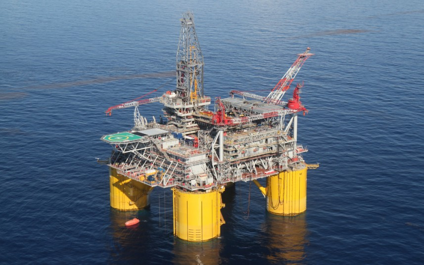

<div style="height:100%;width:100%;overflow:visible">
        <div #gmap id="gmapcss"></div>
        <!--<div *ngIf="map.getZoom() > 18" style="width:80%;float:left;height:100%">
            
            <p (click)="map.setZoom(0)">Back</p>
        </div>-->
    <div [hidden]="!showDiv" style="width:100%;background-color:gainsboro;height:100%">
        <span style="font-size:24px;color:darkgrey">
            <b>Marker Information</b>
        </span>
        <ul style="top:35%">
            <li *ngFor="let data of divData">{{data}}</li>
        </ul>
    </div>
    
    
</div>